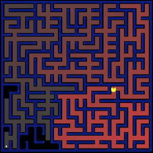

| CS440 Fall 2015Assignment 1: Maze SearchDue date: Monday, September 28, 11:59:59PM |
In this assignment, you will build general search algorithms and apply them to different scenarios. In Part 1 (for everybody), you will be in charge of a "Pacman" agent that needs to find paths through mazes and avoid ghosts. Part 2 (for four-unit students), you will tackle a more complex maze for food collection.
As stated in the beginning of the course, you are free to use any high-level programming language you are comfortable with. This includes (but is not limited to) Java, C++, Python, and MATLAB. The focus of this course is on problem solving, not programming, and the grading will primarily be based on the quality of your solutions and your analysis, as evidenced by your written report.
You have the option of working in groups of up to three people. Three-unit students must work with three-unit students and four-unit students must work with four-unit students. Four-unit groups have to complete additional problems that are extra credit for everyone else. For more detail, see submission instructions.
Contents
- Part 1: For everybody
- Part 2: For four-unit students
- General tips
- Report checklist
- Submission instructions
Part 1: For everybody
1.1 Basic pathfinding
To begin with, you will consider the problem of finding a path through a maze from a given start state to a given goal state. This scenario is illustrated in the figure above, where the start position is indicated by the "Pacman" icon and the goal state is a dot. The maze layout will be given to you in a simple text format, where '%' stands for walls, 'P' for the starting position, and '.' for the goal (see sample maze file). All step costs are equal to one.Implement the following search algorithms for solving different mazes:
- Depth-first search;
- Breadth-first search;
- Greedy best-first search;
- A* search.
Run each of the above algorithms on the following inputs:
For each problem instance and each search algorithm, include the following in your report:- The solution, displayed by putting a '.' in every maze square visited on the path (example solution to the big maze).
- The path cost of the solution, defined as the number of steps taken to get from the initial state to the goal state.
- Number of nodes expanded by the search algorithm.
1.2 Penalizing turns
Consider a modified problem formulation where Pacman's actions are defined as move forward, turn left, and turn right, and these actions can have different costs. "Move forward" takes Pacman one step in the direction he is facing, whereas any turn changes the direction he is facing 90 degrees to the left or right, respectively. Assume Pacman is initially facing right. Note that when Pacman turns, he does not change his position in that move, only the direction, and another "forward" move is needed to take him one step in the desired direction. Modify your code from 1.1 accordingly and run it on the mazes from part 1.1 to make sure you get the same output paths as in 1.1 when all actions have the same cost (there is no need to report anything for this, it is just a sanity check).Now consider the following two mazes:
Run A* using Manhattan distance heuristic for the following two cases:
- forward movement has cost 2 and any turn has cost 1;
- forward movement has cost 1 and any turn has cost 2.
Then design a different heuristic that is more informed than Manhattan distance for the new setting. Explain why it is admissible, explain why it is more informed, and run A* using your heuristic on the same mazes. Make sure your heuristic expands fewer nodes than Manhattan distance in both cases.
For each of the eight cases (two mazes, two cases for each, two heuristics) report the solution costs and numbers of nodes expanded. Show your computed paths for each maze and cost function. Briefly discuss what you observe.
1.3 Pacman with a ghost
Now go back to the action definition of 1.1, but assume that there is a ghost moving on a straight horizontal line through the maze, between two walls.
The ghost moves one square at a time, initially from left to right, unless there is a wall immediately to its right, in which case the initial movement of the ghost is right to left. The ghost changes direction any time it encounters a wall and keeps moving. Changing direction or attempting to move into a wall should not be considered a distinct movement of the ghost, its location should always be one square away from its previous location. The ghost makes a move every time Pacman makes a move, simultaneously. Any time Pacman occupies the same square as the ghost, or tries to "pass through" (swap spaces with) the ghost, the game ends: Pacman dies and the goal becomes unreachable.
Run A* with Manhattan distance on the following mazes, where 'G' marks the initial position of the ghost and 'g' the ghost's path.
For each maze, give the solution path, solution cost, and the number of nodes expanded. Compare these with A* search results on the same mazes but without the ghost.
For full credit, do one of the following (feel free to do more for extra credit):
- Create nice animations showing the movements of the Pacman and the ghost. The animations can be included
in the zip file (but be sure to indicate in your report that we should look for them).
- Design and implement a heuristic that is more informed than Manhattan distance for this problem.
This heuristic should preferably be admissible, but a non-admissible one is still OK as long as it works well.
Briefly show that your heuristic is more informed, and show the number of nodes expanded
by the two heuristics for each maze.
- Create a new maze with more complicated ghost movement (or multiple ghosts) and find the solution. As above, compare this solution with
A* search results on the same maze but with no ghost(s). Try to make this environment as hard for the Pacman as possible -- that is, the length
of the solution path and the number of nodes expanded should be considerably higher than without the ghost. For this part, it is also
interesting (though not required) to consider advanced heuristics.
Part 2: For four-unit students
2.1 Search with multiple dots
Now consider a harder problem of finding the shortest path through a maze while hitting multiple dots. Once again, the Pacman is initially at P, but now there is no single goal position. Instead, the goal is achieved whenever the Pacman manages to eat all the dots. Once again, we assume unit step costs.Revise your A* search code from Part 1 to deal with this scenario. This will require changing the goal test (have you eaten all the dots?) and the state representation (besides your current position in the maze, is there anything else you need to know?). Run your A* search on the following inputs:
For this part of the assignment, it is crucial to design a good heuristic. For full credit, your heuristic should be admissible and should permit you to find the solution for the medium search in a reasonable amount of time. In your report, explain the heuristic you chose, and discuss whether it leads to an optimal solution.
For each maze, give the solution cost and the number of nodes expanded. Show your solution by numbering the goals in the order in which you reach them (once you run out of numbers, use lowercase letters, and if you run out of those, uppercase letters).
2.2 Suboptimal search
Sometimes, even with A* and a good heuristic, finding the optimal path through all the dots is hard. In these cases, we'd still like to find a reasonably good path, quickly. Write a suboptimal search algorithm that will do a good job on this maze and this maze.Your algorithm could either be A* with a non-admissible heuristic, or something different altogether. For full credit, you should expand fewer than 3000 nodes for the first maze and fewer than 72000 for the second, and get solution costs no larger than 190 for the first maze and no larger than 500 for the second.
In your report, discuss your approach and output the solution cost and number of expanded nodes for each maze. You don't have to show the solution path unless you want to come up with a nice animation for extra credit.
For extra credit
Design complicated mazes that combine multiple dots and ghosts, and create heuristics for solving these mazes.General tips
- To form groups, feel free to use Piazza.
Needless to say, working in a group will not necessarily make your life easier, as the overhead of group
coordination can easily outweigh the benefits.
- In your implementation, make sure you get all the bookkeeping right. This includes handling
of repeated states (in particular, what happens when you find a better
path to a state already on the frontier) and saving the optimal solution
path. These topics have been extensively covered during the lectures.
- Pay attention to tiebreaking. If you have multiple nodes on the
frontier with the same minimum value of the evaluation function, the
speed of your search and the quality of the solution may depend on
which one you select for expansion.
- You will be graded primarily on the correctness of your solution, not on the efficiency and elegance of your data structures. For example, we don't care whether your priority queue or repeated state detection uses brute-force search, as long as you end up expanding (roughly) the correct number of nodes and find the optimal solution. So, feel free to use "dumb" data structures as long as it makes your life easier and still enables you to find the solutions to all the inputs in a reasonable amount of time.
Report Checklist
Your report should briefly describe your implemented solution and fully answer the questions for every part of the assignment. Your description should focus on the most "interesting" aspects of your solution, i.e., any non-obvious implementation choices and parameter settings, and what you have found to be especially important for getting good performance. Feel free to include pseudocode or figures if they are needed to clarify your approach. Your report should be self-contained and it should (ideally) make it possible for us to understand your solution without having to run your source code. For full credit, your report should include the following.Part 1 (for everybody):
- For every algorithm in 1.1 (DFS, BFS, Greedy, A*) and every of the three mazes in the assignment (12 cases): the maze with the computed path, the solution cost, and the number of expanded nodes.
- For 1.2, for each of the two settings (turn and movement costs (1,2), and (2,1)), each of the two mazes, and each of the two heuristics (Manhattan distance, your own): the solution cost and number of expanded nodes (8 cases). For each of the two mazes and each of the two costs, show the solution path (4 mazes with solution). Discussion of heuristic -- admissibility and why it is more informed.
- For 1.3, for each of the three mazes: the solution path, the solution cost, and the number of expanded nodes. One of the extension items (animations, advanced heuristic, new maze).
Part 2 (for 4-unit students):
- For 2.1, for each of the three mazes, the solution path, solution cost, and number of expanded nodes. Discuss your heuristic, including its admissibility.
- For 2.2, the solution cost and number of nodes expanded for each of the two mazes, as well as a discussion of your algorithm.
Extra credit:
- We reserve the right to give bonus points for any advanced exploration or especially challenging or creative solutions that you implement. Three-unit students always get extra credit for submitting solutions to four-unit problems. If you submit any work for bonus points, be sure it is clearly indicated in your report.
Statement of individual contribution:
- All group reports need to include a brief summary of which group member was responsible for which parts of the solution and submitted material. We reserve the right to contact group members individually to verify this information.
Submission Instructions
By the submission deadline, one designated person from the group will need to upload the following to Compass2g:- A report in PDF format.
Be sure to put the names of all the group members at the top of the report,
as well as the number of credit units.
The name of the report file should be lastname_firstname_a1.pdf
(based on the name of the designated person).
- Your source code compressed to a single ZIP file.
The code should be well commented, and it should be easy to see the correspondence between
what's in the code and what's in the report. You don't need to include executables
or various supporting files (e.g., utility libraries) whose content is irrelevant to the
assignment. If we find it necessary to run your code in order to evaluate
your solution, we will get in touch with you.
The name of the code archive should be lastname_firstname_a1.zip.
Compass2g upload instructions:
- Log into https://compass2g.illinois.edu and go to Fall 2015 CS440.
- Select Assignment 1 (three units) or Assignment 1 (four units) from the list, as appropriate.
- Upload (1) your PDF report and (2) the zip file containing your code as two attachments.
- Hit Submit. -- If you don't hit Submit, we will not receive your submission and it will not count!
Late policy: For every day that your assignment is late, your score gets multiplied by 0.75. The penalty gets saturated after four days, that is, you can still get up to about 32% of the original points by turning in the assignment at all. If you have a compelling reason for not being able to submit the assignment on time and would like to make a special arrangement, you must send me email at least a week before the due date (any genuine emergency situations will be handled on an individual basis).
Be sure to also refer to course policies on academic integrity, etc.